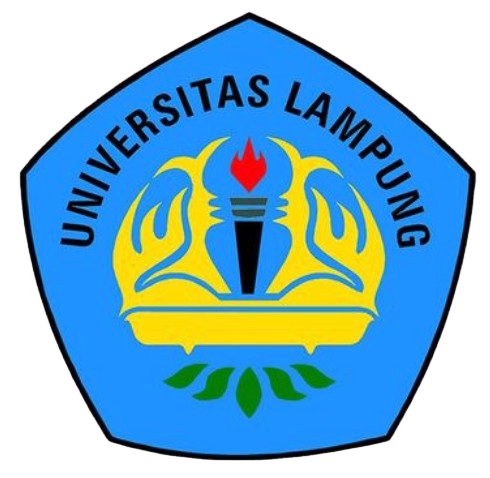
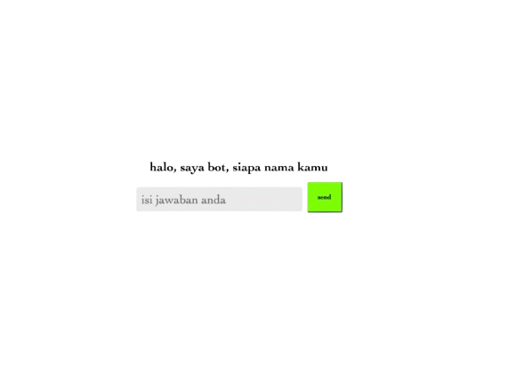
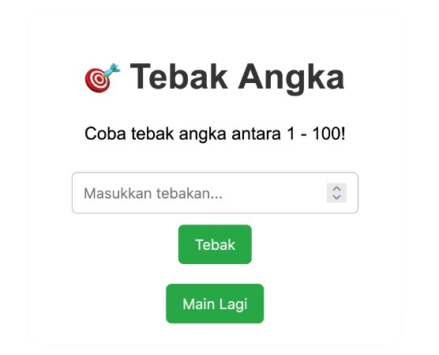

Alfredo Raul Adamsyah
Tentang Saya
Halo! Saya Edo, lulusan Program Studi Matematika dengan peminatan Statistika di Fakultas Matematika dan Ilmu Pengetahuan Alam (FMIPA), Universitas Lampung dengan IPK 3.45/4.00. Saya memiliki minat besar pada bidang Data Analyst, Data Scientist, Risk Management, dan Web Development. Dengan latar belakang matematika dan statistika, saya terbiasa berpikir logis, kritis, dan berbasis data dalam menyelesaikan berbagai permasalahan. Saya memiliki ketertarikan dalam mengolah data menjadi insight yang bernilai untuk mendukung pengambilan keputusan yang lebih efektif dan tepat sasaran.
Selain bidang analisis data, saya juga memiliki pengalaman dalam membangun website interaktif dan responsif menggunakan HTML, CSS, dan JavaScript. Saya percaya bahwa perpaduan antara kemampuan analitis dan teknologi dapat menciptakan solusi digital yang inovatif dan berdampak. Bagi saya, data bukan sekadar angka, melainkan sumber informasi yang dapat dianalisis untuk menghasilkan perubahan yang bermakna. Oleh karena itu, saya terus mengembangkan kemampuan di bidang data science, machine learning, dan teknologi digital agar dapat berkontribusi dalam dunia profesional yang dinamis dan terus berkembang.
Education & Experience

Universitas Lampung
Saya pernah menjalani program magang di Badan Riset dan Inovasi Nasional (BRIN) Bandung sebagai mahasiswa jurusan Matematika. Selama magang, saya terlibat dalam kegiatan riset yang berfokus pada analisis data, pemodelan matematis, dan pengolahan data statistik untuk mendukung proyek-proyek penelitian di bidang sains dan teknologi. Pengalaman ini sangat memperkaya wawasan saya mengenai penerapan ilmu matematika dalam dunia nyata, khususnya dalam lingkungan riset yang menuntut ketelitian, logika, dan pemecahan masalah secara sistematis. Magang di BRIN juga membantu saya mengasah kemampuan berpikir kritis serta berkolaborasi dalam tim multidisiplin.
Skill
Toolset
Karya


Pengalaman Organisasi
- HIMATIKA (Himpunan Mahasiswa Jurusan Matematika) FMIPA Unila - Anggota Bidang Minat dan Bakat (2023)
- HIMATIKA (Himpunan Mahasiswa Jurusan Matematika) FMIPA Unila - Ketua Bidang Eksternal (2024)
- IKAHIMATIKA (Ikatan Himpunan Mahasiswa Matematika) Indonesia - Kordinator Sub Wilayah Lampung (2024-2025)
Motivasi
— Alfredo Raul Adamsyah